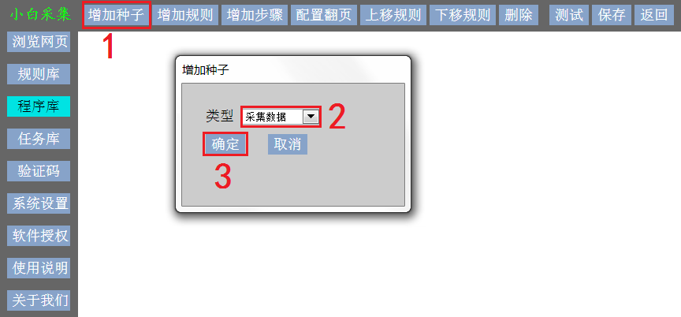

增加种子。种子是采集数据的起始网页。此处不指定种子URL，相当于占位符
点击
增加种子
按钮，弹出
增加种子
对话框
点击类型下拉选择框，选择种子类型
采集数据：从种子网页开始抽取结构化数据的流程
必须有且只有一个此类型的种子
登录网站：从种子网页开始登录目标网站的流程
如果目标网站需要登录，则需要一个此类型的种子，否则不要
注销登录：从种子网页开始注销登录信息的流程
如果目标网站对登录账户有记录，登录后要注销，下次登录才能成功，则需要一个此类型的种子，否则不要
验证码识别：从采集网页中识别验证码，输入验证码的流程
如果在采集过程中有验证码，则需要一个或多个此类型的种子，否则不要
点击
确定
按钮
